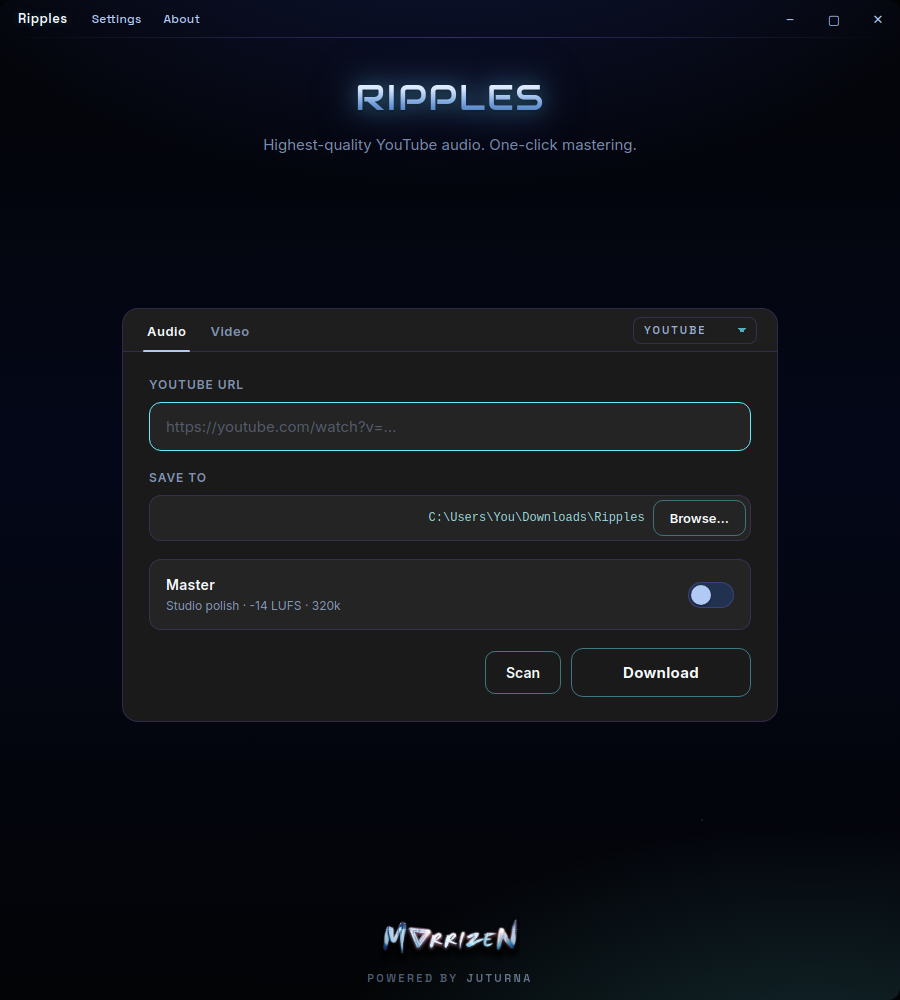
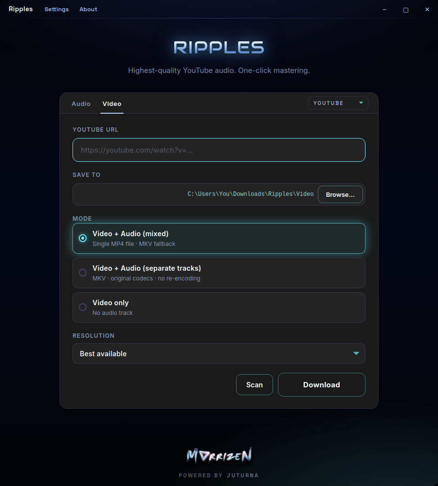
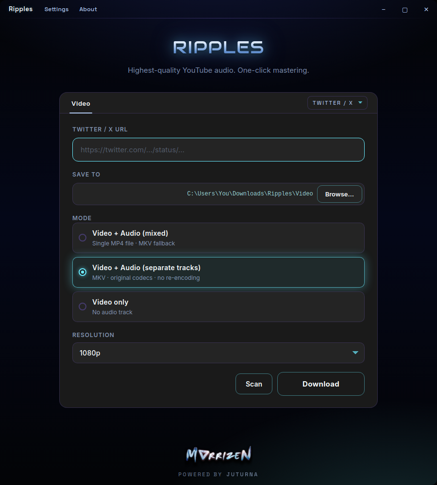

Studio-grade audio
Every track is extracted to 320 kbps CBR MP3 at 44.1 kHz stereo, with artwork and metadata embedded automatically.
Ripples is a desktop app that pulls the highest-quality audio and video off the web — and, in one click, masters the audio to a release-ready level. Paste a link, pick your settings, done.
Features
Every track is extracted to 320 kbps CBR MP3 at 44.1 kHz stereo, with artwork and metadata embedded automatically.
Flip the Master switch and Ripples runs a real mastering chain: high-pass, noise reduction, two-pass loudness normalization to −14 LUFS, then a true-peak limiter.
Scan a link to preview title, channel, duration and estimated file size — before spending bandwidth on the download.
Ripples analyses loudness during a scan and tells you whether a track actually needs mastering — or already sounds clean.
Single mixed MP4, separate tracks in MKV with original codecs and no re-encoding, or video with no audio at all.
Cap downloads at 4K, 1440p, 1080p, 720p or 480p — or just take the best available. Size estimates update instantly.
YouTube for audio and video, plus video from Twitter / X and Pinterest.
Everything ships inside the app and runs on your machine. No account, no upload, no telemetry — your files never leave your PC.
The whole interface is available in English, French and Spanish, switchable from Settings.
Inside the app



How it works
Drop in a YouTube, Twitter / X or Pinterest URL.
Preview the title, length, size — and whether it needs mastering.
Audio or video, quality, format, and the folder it saves to.
Watch live progress, then jump straight to the file.
The Master switch
Mastering isn't a preset — it's a four-stage chain that measures your track, then corrects it.
Denoise
A 30 Hz high-pass clears subsonic rumble while noise reduction lifts hiss out of the noise floor.
Analyze
A full measurement pass reads true loudness, peak level and dynamic range.
Normalize
Those measurements drive a linear correction to −14 LUFS — the streaming standard.
Export
A true-peak limiter guards the ceiling, then it's written out at 320 kbps.
If mastering ever fails, Ripples keeps your original download and tells you what happened — you never lose the file.
Specs
Free to download. No account required.
Get Ripples